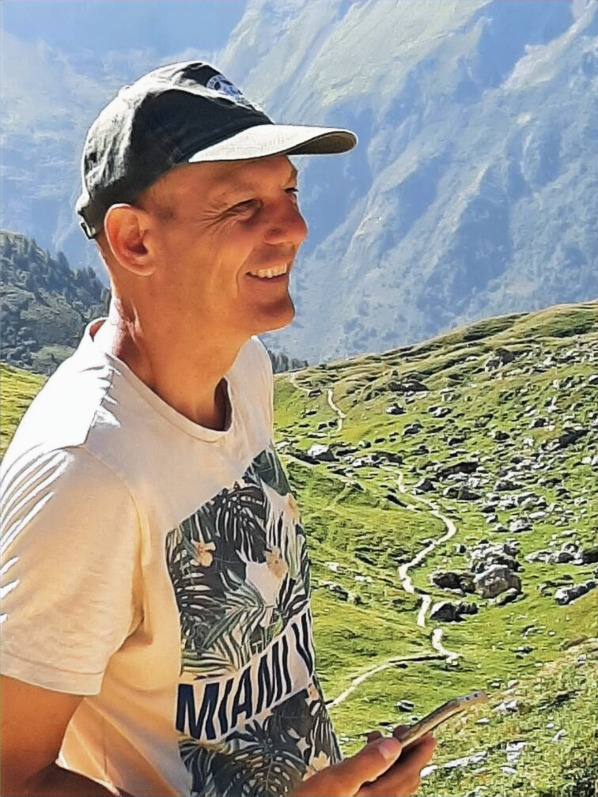

Installé depuis 2005 à La Charité-sur-Loire, François Masson met son expertise au service du bâti ancien.
François Masson est spécialisé dans la rénovation et la restauration du patrimoine ancien. Son entreprise artisanale intervient principalement dans la Nièvre (58), sur les secteurs de Nevers, Cosne-sur-Loire et Pouilly-sur-Loire.
Fort d'un savoir-faire acquis au fil des chantiers les plus prestigieux de la région, il travaille avec une exigence absolue : respecter l'âme du bâtiment. Que ce soit pour un mur de clôture, une façade monumentale ou une église classée, chaque intervention est guidée par l'utilisation de matériaux traditionnels et naturels.
"Une de mes plus grandes fiertés reste l'intervention sur la partie classée de l'église de Pouilly-sur-Loire. Nous avons réalisé un travail de maçonnerie traditionnelle lors de la restauration des vitraux, en utilisant des techniques identiques à celles employées il y a 800 ans."
Pour François, un mur doit "respirer". C'est pourquoi il proscrit les matériaux modernes incompatibles avec la pierre ancienne. Ses enduits sont exclusivement composés de sable de Loire, de chaux naturelle et de pigments de terre de Saint-Amand.
Cette approche garantit non seulement une esthétique parfaite, intégrée au paysage local, mais assure surtout la longévité de la structure en évitant l'humidité et le poudrage des joints.
